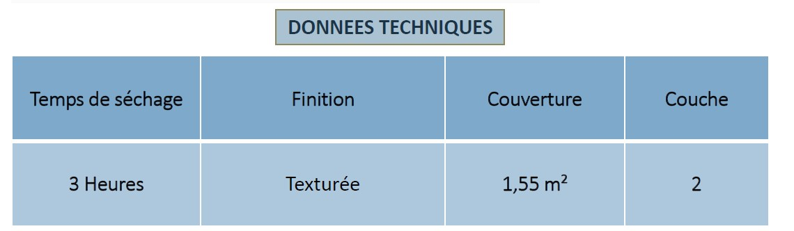

Une texture extérieure moyenne qui donne un aspect traditionnel élégant à votre propriété. Il protège également les murs extérieurs en couvrant les fissures de surface et en empêchant la corrosion du béton.